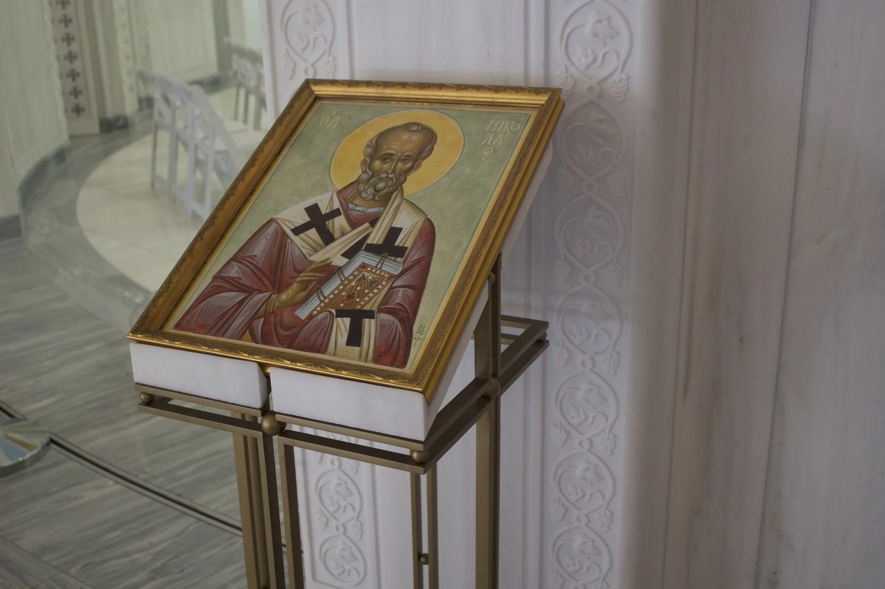
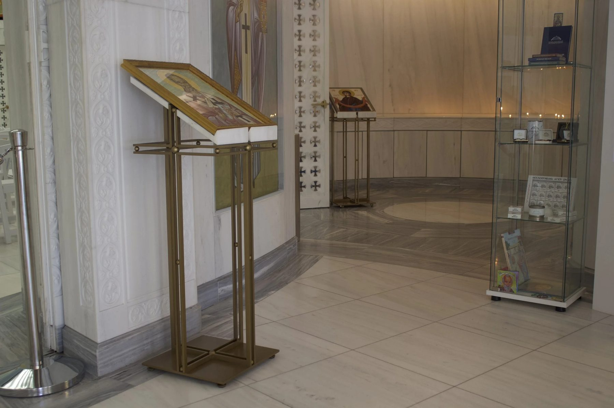
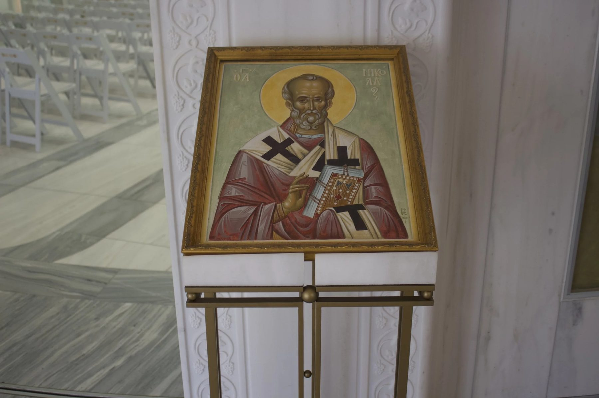
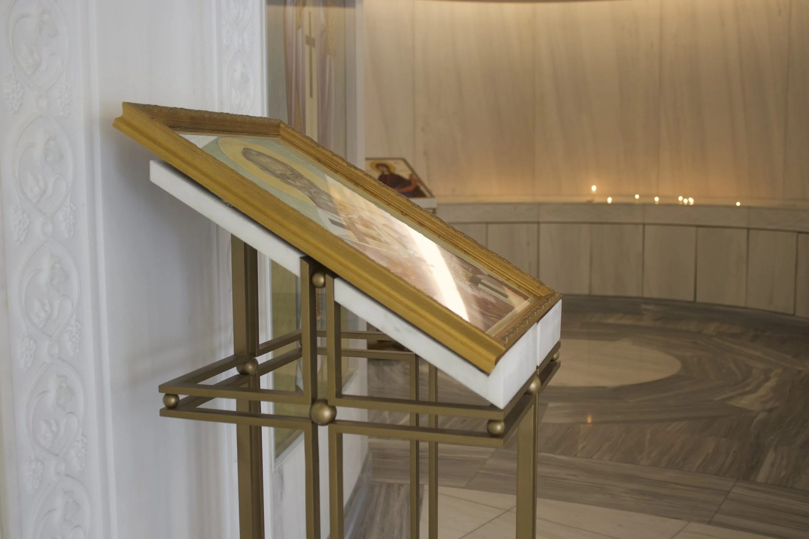
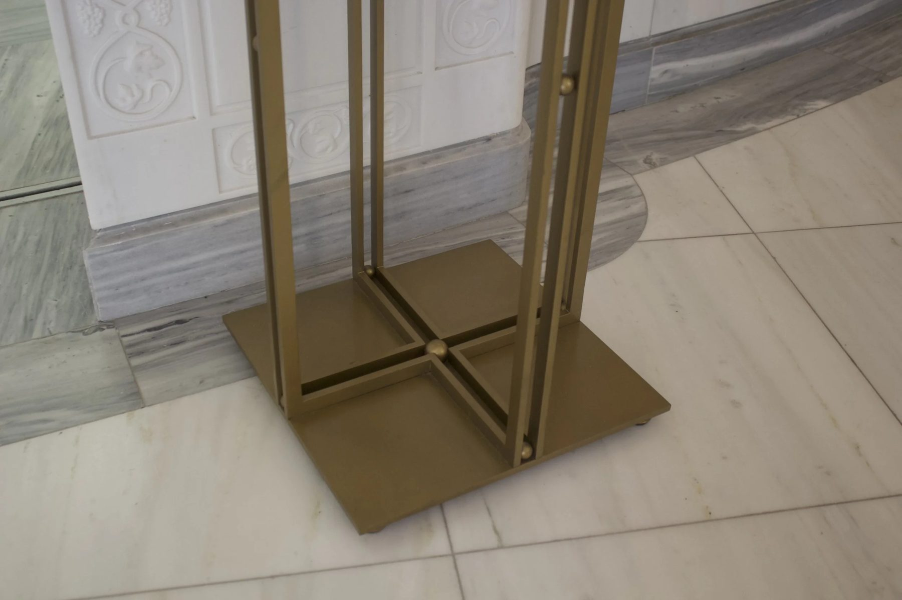
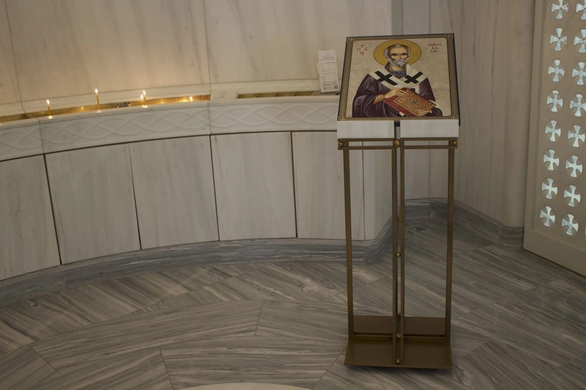
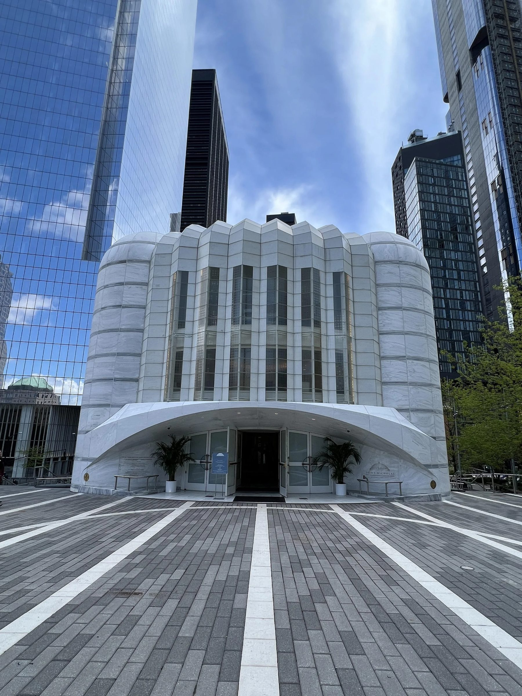
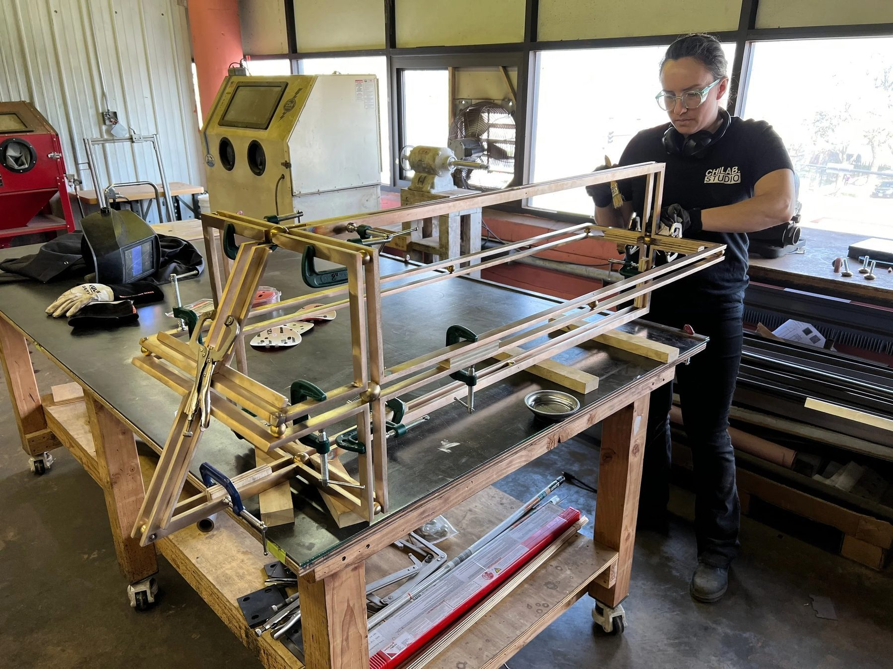

Architectural / 2022
Icon Stands
St. Nicholas Greek Orthodox Church, National Shrine
Matching pairs of bronze pedestals at the chapel entry, engineered with Santiago Calatrava.
The gravity defying stature of the pedestal design was an engineering problem as much as a design one, resolved in collaboration with Santiago Calatrava.
In matching pairs, the bronze pedestals serve the entryway of the chapel, ordained with iconographic tablets. As guests enter, the pedestals function as bases for prayer.
Contemporary metalworking meets an ancient stone: the pedestals carry Pentelic marble, the same quarry that supplied the Parthenon.
Details
- Year
2022 - Location
New York, NY - Category
Architectural - Materials
Cast and fabricated bronze, Pentelic marble
Credits
- Architect: Santiago Calatrava
Index







